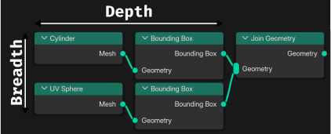
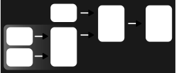
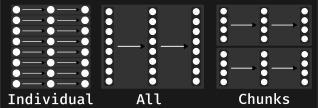

Evaluating Geometry Nodes
Join the interactive part!
polli.live with

What's your background?
Basics

Toposort

Are there multiple possible orderings?
Two-Pass Evaluation


Request Based Evaluation

Lazy Function
Lazy Function Graph


Scheduling – Message Priority

Scheduling – Breadth or Depth First?

Lazy Function Composition
LazyFunction ⟶
Graph ⟶
LazyFunction
Node Groups

Zones


Scheduling – Multi Threading

How many threads should be used here?
Task Stealing

Splitting the Work

Non-Uniform and Unknown Task Sizes
Lazy Threading

Array Processing

How many fields are evaluated here?
No GPU Processing

No Just-in-Time Compilation

Latency: Time per Element
Throughput: Elements per Time
What should we optimize for?
Multi Function
Multi Function Build Utils
Combinatorial Explosion
| Case |
Input 1 |
Input 2 |
Input 3 |
| 1 |
Single |
Single |
Single |
| 2 |
Single |
Single |
Array |
| 3 |
Single |
Array |
Single |
| 4 |
Single |
Array |
Array |
| 5 |
Array |
Single |
Single |
| 6 |
Array |
Single |
Array |
| 7 |
Array |
Array |
Single |
| 8 |
Array |
Array |
Array |
Binary Size / Compilation Time vs.
Performance
Controlling the Explosion
| Method |
Map Range Size
|
Add |
Logarithm |
Simple |
- |
1296 ms |
240 ms |
Materialized |
+ 30 kb |
68 ms |
71 ms |
SomeSpanOrSingle |
+ 137 kb |
- |
- |
AllSpanOrSingle |
+ 1100 kb |
42 ms |
63 ms |
Multi Threading

Grain Size – Lower Bound
Grain Size – Upper Bound
SIMD
int i = 0;
for (; i + 8 <= size; i += 8) {
// Process chunks with SIMD and loop unrolling.
}
for (; i < size; i++) {
// Process remaining elements.
}
Add Node
| Mode |
Time |
Improvement |
Baseline |
72 ms |
1.0 x |
SSE2 |
27 ms |
2.7 x |
AVX2 |
23 ms |
3.1 x |
SIMD – Chunk Sizes
Final Thoughts
Optimize optimizability.
Don't be lazy with lazyness.
Estimate optimal performance.